SUN WORSHIP
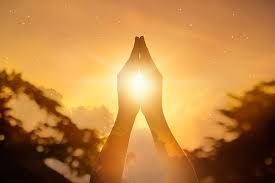
Introduction
The sun symbol stands as one of the most ancient and profound icons in the history of human evolution. For millennia, global cultures depicted the sun not merely as it appeared to the naked eye, but as a representation of its fundamental essence, encapsulating humanity’s most vital concepts: time, life, birth, death, divinity, royalty, and power. As the primary source of warmth and growth, the sun played a central role in religious and spiritual beliefs, revered as a potent deity symbolizing renewal and the divine. This profound dependence on the sun for survival led ancient civilizations to develop unique traditions and rituals to honor its presence, cementing its place as the ultimate pillar of existence.
Most believe that sun worship arose out of the instinctual impulse of primitive people to deify elements crucial to their survival. However, ancient texts clearly describe that the sun was venerated for a much more profound reason, rooted in the spiritual nature of light. Light was perceived as the greatest visible manifestation of the Divine. As the sun is the preeminent source of light within our perception, it was revered as the outpouring of the Divine into the material world—a radiant flow that ultimately originates from an invisible, supreme Creator.
The roots of solar religion extend back tens of thousands of years; both Ancient Egyptian and Indo-European traditions describe a lost "Golden Age" that witnessed the first solar rituals. According to records preserved in Egypt, the foundations of their civilization and faith stretch back approximately 42,000 years, while Indo-European archaeological evidence traces this worship back at least 12,000 years. Both cultures, along with the legends of indigenous peoples in the Americas, assert that the solar religion is an "inheritance" from an advanced civilization destroyed by a global cataclysm (a Great Flood). This is frequently linked to Plato’s lost civilization of Atlantis, where the sun served as both the spiritual and technological engine of that vanished world.
History
.jpg)
Many ancient civilizations saw the Sun as a strong woman who wanders across the sky spreading light and warmth, taking a long road in summer and a much shorter one in winter. The warmth of the Sun was compared to the comforting feel of a mother, and it was believed that its rays showed them the paths to follow on the mainland.
It was not recently that people began to associate the Sun as a major influence on their lives. During the 17th century, the development of Tarot cards for fortune-telling included a card that represents the Sun’s influence on the life of man. Even long before that, many civilizations considered the Sun a god and worshiped it. For them, a Solar eclipse was a terrifying indication of the Sun god’s anger; they chanted and prayed fervently until the eclipse passed and the light returned.
Mostly, it was the Ancient Egyptians and South American tribes—Aztecs, Mayans, and Incas—who worshiped the Sun as a primary deity
EGYPTE
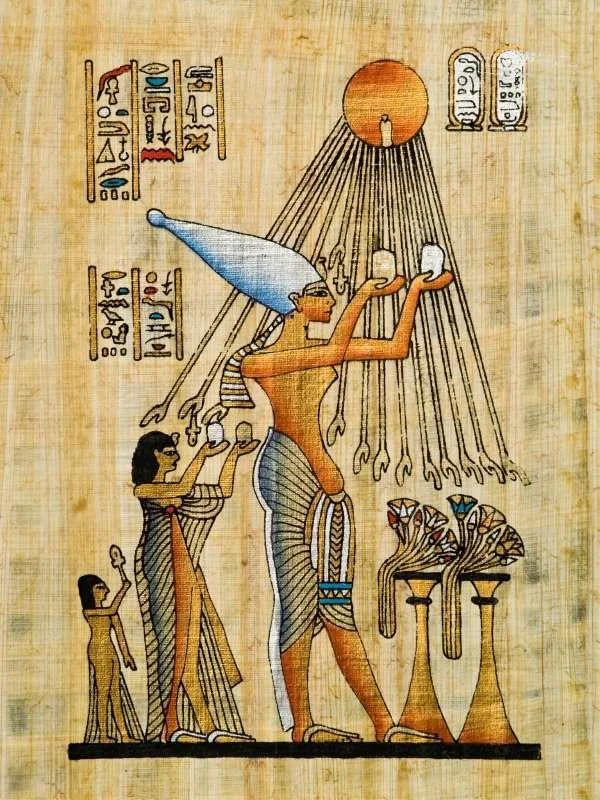
During the reign of Akhenaten, solar rays were uniquely depicted ending in human hands reaching toward offerings—often lotus flowers—piled high on altars. This was more than mere artistry; it reflected the belief that Aten physically "consumed" these gifts. Akhenaten hosted massive open-air banquets for the Sun, and as the flowers wilted and the food desiccated under the scorching heat, it was viewed as divine acceptance—a sign that the deity had feasted on their vital essence. Naturally, these vast displays of abundance must have been a constant temptation for the legions of servants awaiting the conclusion of the ritual.
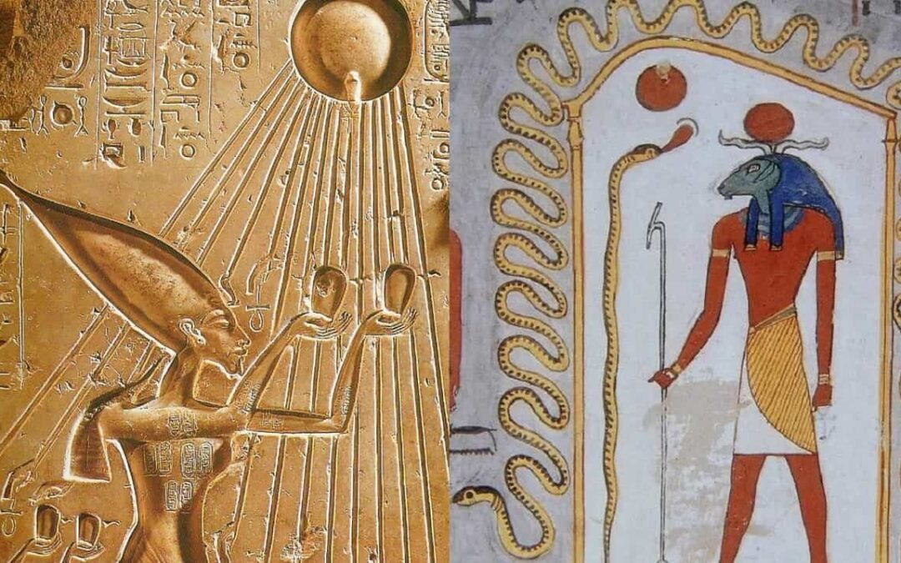
In ancient Egypt, a culture of veneration and deification surrounded the Sun. Funerary monuments such as the pyramids serve as tangible evidence of the deep-seated connection between Earth and Sun, Egypt and Sun, Pharaoh and Sun.
The roots of sun worship in ancient Egypt trace back to the Old Kingdom, as evidenced by the Pyramid Texts, initially associated with the elite. However, it is likely that a cult venerating the Sun existed since predynastic times.
Initially personified as Horus, the Sun later became known as Ra, a name predominant from the Second Dynasty onward. This association extended to the monarchs who proclaimed themselves “sons of Ra,” elevating them to the status of solar deities. Notable examples include Djedefre of Dynasty IV and Sahure of Dynasty V.
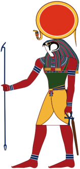
The universality of Akhenaten’s god is clearly set forth in the famous hymn, which so closely resembles the 104th Psalm, and of which the king claims, probably with right, to be the author. The sun-god is represented as the All-Father, the source of all life. He it is who has created the different nations and assigned them their divers complexions and languages. He has also provided for their sustenance, making the Nile to well up out of the nether world to water Egypt, but setting a "Nile in the sky" (rain) for other peoples.
“Thou didst make the distant sky in order to rise therein, in order to behold all that thou hast made. . . . All men see thee before them, for thou art Aton of the day aloft.”
The centrality of solar worship found expression in the very architecture of Egypt, creating a "spatial theology" where stone itself captured the divine flow. The alignment of temples such as Karnak to the rising sun, and the design of the obelisk as a petrified ray of light, were not merely engineering feats but a means for stone to capture the radiance of Ra. The architectural landscape reinforced the idea that Egypt’s endurance as a civilization was inseparable from the sun’s eternal presence. Ritual and monument thus fused into a single political theology: to rule Egypt was to embody the sunrise, and to build its temples was to inscribe the solar cycle into stone.
This theory proposes a revolutionary perspective: ancient temples and pyramids were not merely places of worship, but integrated solar-spiritual power stations. According to this school of thought, the combination of stone type, precise geometry, and solar alignment generates a physical energetic reaction. In this context, the sun was not a mere religious symbol, but a functional "Power Source." Pyramids and temples were astronomically aligned with extreme precision to capture, amplify, or direct solar and cosmic energy for advanced technical or spiritual purposes.
Sun worship in Egypt was not merely a cultural development or a passing intellectual aberration, but a systematic ideological project. Its aim was to divert people from the worship of the one true God and from the teachings of the prophets sent to Egypt. Proponents of this view classify sun worship as a form of "indirect Satanic worship"—not in the sense of explicitly bowing down to a dark entity, but rather through the substitution of the Creator for the created. In doing so, human nature was diverted from communion with the Absolute Source of Existence toward the veneration of a physical celestial body.
Some modern theological interpretations propose a controversial link between the Egyptian god "Ra" and the concept of "Satan". This hypothesis is based on a phonetic similarity with the Hebrew word "Ra" (Ra'ah), which in Biblical Hebrew means "evil" or "wicked" (derived from the root R-A-A, meaning to spoil or do harm). However, linguists clarify that the two words are historically unrelated; the Egyptian "Ra" translates to "Sun" or "Creator," while the Hebrew term denotes "Evil." In a related vein, certain modern religious interpretations view the crimson or intense Sun as a symbol of destructive or demonic forces, reinterpreting the ancient life-source as a manifestation of wrath and material dominance.
In the context of the Exodus narrative, a compelling link emerges between the Egyptian god Ra and the concept of evil. In Exodus 10:10, Pharaoh tells Moses and Aaron: "Look, for evil (Ra') is before you." Many theological scholars interpret this verse as a profound double entendre. While Pharaoh may have meant "evil" or "trouble" in a worldly sense, the use of the Hebrew word (Ra') is viewed as a symbolic indictment of the sun god Ra. From this perspective, Ra is depicted not as a savior, but as a malevolent force or a "shadow" standing against the divine mission of Moses.
The attempts to link the Egyptian god Ra with evil often extend to associations with Set, the Egyptian god of chaos, storms, and confusion, who is frequently compared to "Satan" in modern theological frameworks. In more controversial contexts, certain conspiracy theories or anti-Semitic narratives employ a linguistic deconstruction of the name "Israel" (Is-Ra-El). They falsely claim it is a composite of ancient deities (Isis, Ra, and El) to suggest "evil" or pagan roots. However, linguists and historians overwhelmingly reject this, confirming that "Israel" has a distinct Hebrew etymology meaning "He who strives with God."
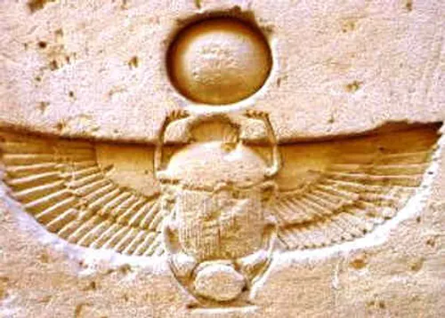
In Ancient Egyptian theology, Khepri (or Khepera) personified the rising sun and the essence of the early morning light. He is typically depicted as a man with the head of a scarab beetle, or as a complete scarab rolling the solar disc across the firmament—mirroring the beetle's behavior of rolling balls of dung on the earth. For the ancients, this was more than a visual metaphor; it was a profound symbol of "Cosmic Propulsion." Khepri represented the sun being pushed from the underworld to be reborn at dawn, embodying the principles of transformation, becoming, and perpetual self-renewal.
MESOPOTAMIA
Kingship in Mesopotamia was transferred to the city of Sippar, the preeminent center for the worship of the sun god (Utu). This cult flourished alongside the advancement of agriculture during the Chalcolithic period. Sippar is distinguished as the oldest site where regular sun worship was established, dating back even before the Great Flood. Its primary sanctuary was known as the "E-babbar", meaning the "Radiant House," a testament to the supreme status of the solar deity. Following the Deluge, the worship of Shamash expanded beyond Sippar and Larsa, permeating all major metropolises including Babylon, Ur, Nineveh, and Nippur, establishing the sun as the theological heart of successive empires.
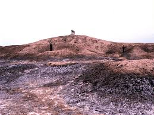
Sippar (modern-day Tell Abu Habbah near Baghdad) stands as one of the oldest and most vital epicenters of sun worship within Akkadian and Sumerian traditions. The site holds a unique status in Mesopotamian lore as the location where the flood hero (Ziusudra/Utnapishtim) is said to have buried the antediluvian records—the sum of human knowledge—before the Great Deluge. Linguists often link the city's name to the word "sipru", meaning "writing" or "record." Thus, Sippar was envisioned not only as a "Radiant House" for the sun but as a "Cosmic Library" that preserved the heritage of humanity from the depths of the floodwaters.
The Sumerian name E-babbar (𒂍𒌓𒌓𒊏) carries a profound visual and spiritual significance, literally translating to the "White House" or the "Shining/Radiant House." This title was far more than an architectural description; it served as a symbolic proclamation of the Sun God's (Utu/Shamash) supremacy as the ultimate source of light and brilliance. This name was bestowed upon the primary temples of Shamash in both Sippar and Larsa, envisioning them as terrestrial beacons reflecting the celestial radiance.
In the great river valleys of Mesopotamia, the sun found expression not primarily as a creator but as an arbiter. Shamash, the solar deity, presided over justice. His light was imagined as piercing all obscurity, revealing hidden crimes, and exposing falsehood. This conceptualization emerges vividly in the Code of Hammurabi, where the king is depicted receiving the law directly from Shamash. The sun here serves as a guarantor of equity, legitimizing human legal codes as reflections of cosmic order.
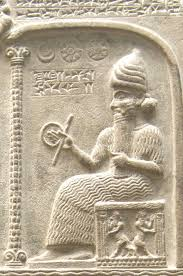
Sumerian texts reveal a multitude of names for the Sun God, including Utu, Babbar, Gis-sir, Zalam, Buzer, as well as Man and Amna. Scholars (e.g., Abd al-Rahman, 1975) suggest that the latter two are the historical origins of the Egyptian god Amun, just as the primary name Utu is believed to be the linguistic and theological source of the Egyptian solar deity Aten. Utu was adorned with epithets reflecting majesty and brilliance, described as: "The Lapis Lazuli Bearded," "The Radiant Faced," "The Handsome," "The Long-Armed," "The Exalted," and "The Unchanging/Constant One."
The Star of Shamash is a sun symbol that originated in the Mesopotamian region, deeply influenced by the Sumerian and Akkadian peoples. They worshipped Shamash as the supreme sun god and the lord of justice and order. The earliest evidence of this star dates back to the 3rd millennium BCE, where it served as a symbol of the sun god Utu in Sumerian texts and sacred art.
The Star of Shamash depicts the sun as the ultimate source of light, truth, and law—the divine judge of both gods and humans. It is inextricably linked to the ideals of wisdom, morality, and the diverse roles of Shamash as creator, healer, warrior, and king.
The origins of Sumerian solar symbols can be traced back to the Neolithic period. The Maltese Cross appeared as early as the Hassuna, Samarra, and Halaf cultures (c. 5000 BCE). This cross held clear religious significance, often painted in red on the shoulders of clay figurines. The pictographic sign for the sun evolved from a cross or plus sign (+) into the cuneiform "bar" sign. Alongside the cross, the circle motif emerged, eventually transforming into the "rosette" or daisy pattern (c. 4000 BCE). Other vital symbols included the disc atop a standard and the star on a spear-butt, all reflecting a profound veneration of cosmic energy since the dawn of civilization.
Hancock sees the solar boat in Mesopotamian mythology (such as the boat of Otto sailing through the underworld at night) as a remnant of advanced astronomical knowledge passed down by a lost global civilization.
In some theories (such as David Hatcher Childers or proponents of "ancient technology"), the solar boat is not just mythical, but reflects accurate astronomical knowledge inherited by the Sumerians from an older civilization (such as the Ubaid culture or earlier).
Baal, Bel, Babylon are all interrelated words pertaining to chief Sun-deities of pagan Sun-worship. Baal means to “shine,” also used for “Lord/husband.” Bel is another name for Satan. Babylon was the ancient Canaanite city where Sun-worship began and from there spread to all ancient cultures of the world and remains in the world today as the counterfeit religion of Satan under the guise of the Roman Catholic Church and its off-shoot religions (daughters) including Christianity.
AMERICA
In descriptions from some historical and academic sources (such as Smarthistory and museums such as the Brooklyn Museum), the feathers spread around the face in the "halo war bonnet" type are said to resemble the sun's rays surrounding the head, giving a sense of a solar frame that highlights the face as a center of power or light.
MAYA
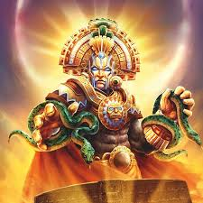
In Mesoamerica, solar religion reached a visceral intensity unparalleled elsewhere. Among the Maya, the deity Kinich Ahau embodied the sun’s dual nature—nurturing yet destructive, brilliant yet jaguar-clawed. Temples were aligned to solstices and equinoxes, making the architecture itself a liturgical calendar. Kingship, as in Egypt, bore solar weight, for rulers claimed descent from or identification with the sun.
THE AZTEC
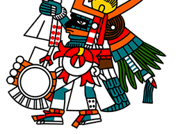
The Aztecs pressed solar theology into an even more urgent and precarious register. They believed the cosmos existed in a fragile Fifth Sun, each previous era having been destroyed by catastrophe. To prevent total cosmic collapse, the sun had to be "nourished" by human blood. The god Huitzilopochtli, patron of sun and war, demanded sacrifice as the essential engine of cosmic order. The hearts offered at the Templo Mayor were not seen as ritual excess but as an existential necessity. The sun’s daily rising was not a given—it was earned through ritual violence.
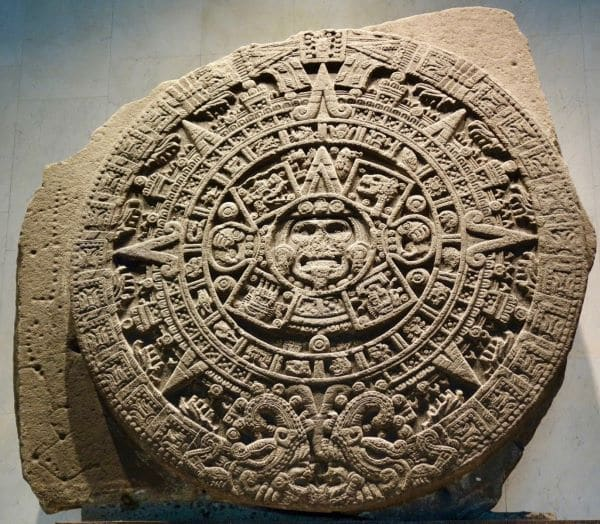
The Aztec Sun Stone is a truly incredible artifact: a massive carved stone, highly detailed, with a diameter of 12 feet and weighing almost 25 tons. Once part of a temple wall, it was created in 1427 AD and discovered in 1790 AD in Mexico City. It stands as a testament to Aztec cosmological prowess, functioning as both a calendar and a visual record of their mythological eras.
While we don’t know the exact use of the Sun Stone, we do know that the sun was an important aspect of their timekeeping and mythology. According to Aztec belief, each era of human history was marked by a different sun. At the time of the creation of the Sun Stone, four suns (and thus four eras) had already passed. These eras are each depicted on the sun stone.
At the end of each era, the sun would fall to earth and humanity would be destroyed or transformed into other animals. The Aztecs believed they were in the fifth and final era of their civilization at the time of the stone’s creation. Tragically, it seems they were correct about their coming downfall; the Aztec Empire fell to an invasion led by Hernan Cortes in 1521.
INCA
The Inca Sun Worship begins before dawn, as the emperor, his family, and the people proceed in a solemn procession to the main square of Cuzco, waiting in silence for the rising sun, whose apparition is met with jubilation. Everyone present kneels down, and the Inca offers chicha to the Sun God in a silver bowl. The procession then marches to the Coricancha, where the sacred fire is rekindled through the use of mirrors to focus the sun's rays. These rites are accompanied by dances and sacrifices of grain, flowers, and animals, which are consumed in sacred bonfires.
The Inca culture, in particular, was fundamentally built upon the worship of the sun. In these diverse civilizations, the Sun god was known by many names, reflecting the unique lens of each culture. Yhi, Liza, The Ten Suns, Apollo, and Utu are just a few examples of how humanity personified the solar force.
Machu Picchu, home to the “Temple of the Sun,” showcases the Incan reverence for the celestial. Perched high in the Andes of Peru, the temple’s strategic placement and construction indicate its role in astronomical observation and religious ceremonies. Although much of its original function is still a subject of archaeological enquiry, current understanding suggests it was a site of solar worship with significant agricultural implications tied to the sun’s position. As another UNESCO World Heritage Site, it attracts thousands of tourists, and it is intriguing to visitors because of its history and excavation findings.
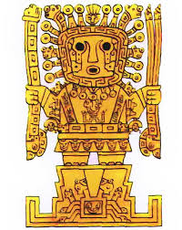
For the Inca civilization, the sun god Inti was the most important deity, believed to be the divine ancestor of the Incan emperors. The Festival of Inti Raymi, celebrated during the winter solstice, was a grand religious event involving sacrifices, feasts, and dances to honor the sun and ensure agricultural prosperity. The Temple of the Sun, or Coricancha, in Cusco was the most sacred site dedicated to Inti, adorned with gold to reflect the sun's brilliance.
During the Inca Sun Festival, which lasted several days, white llamas and other animals were sacrificed in honor of the sun god. The Inca Sun Festival is still celebrated today throughout the Andean region, in countries such as Bolivia, Ecuador and Peru.
THE GRAET PLAINS TRIBES
The Great Plains tribes of North America perform their traditional Sun Dance once a year during the peak summer months. Native American nations have been practicing these ceremonies for many generations, with each tribe possessing its own sacred narrative regarding the origins of this marvelous ritual. For them, the Sun Dance is more than a ceremony; it is a "vital sacrifice" intended to ensure the continuity of life, heal the community, and renew the bonds with the Solar Source that provides strength and abundance to the earth and its people.
HINDUISM
In Hinduism, the sun is associated with the deity Surya, the primal source of light and life. Beyond its biological role, the sun is considered one of the nine celestial bodies, known as the Navagraha, and holds profound significance in Vedic astrology. Surya is revered as the "Pratyaksha Brahman"—the visible form of the Divine that humans can witness daily—acting as the cosmic witness to all earthly deeds.
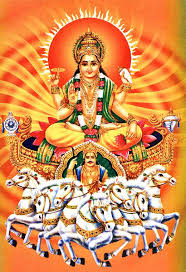
The ancient Vedic texts of Hinduism revere the Sun as an "inexhaustible reservoir of energy and radiance." Known by the divine names Surya or Aditya, the Vedas abound with hymns portraying this celestial body as the ultimate source and sustainer of all life on Earth. Sun worship in India spans countless centuries, establishing Surya not merely as a deity, but as the vital engine of both consciousness and material existence.
Puranic and epic texts emphasize the centrality of sun worship; the Ramayana recounts how the sage Agastya initiated Lord Rama into the "Aditya Hridaya" hymn to harness power from the heart of the Sun. Additionally, the astronomer and astrologer Varahamihira provided intricate details on the rituals of installing Sun idols as conduits for cosmic energy. Among the most profound accounts is that of the poet Mayura at the court of King Harshavardhana, who composed the "Surya Shatakam" in praise of the Sun. It is believed that the vibrational potency of his eulogies cured his blindness, reinforcing the concept of the Sun as a cosmic physician and a healer of both soul and body.
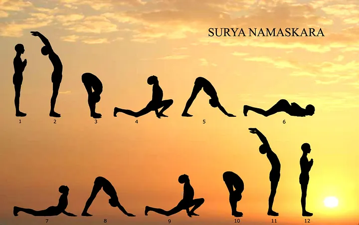
There are many hymns sung at sunrise to welcome the returning light. In Hinduism, Surya is the chief sun god, the son of Dyaus Pita (Heavenly Father). The Sandhyavandanam ritual, performed by practitioners, is a profound act of sun worship and spiritual alignment. Many Hindu texts depict the sun as a sovereign king riding a chariot drawn by seven horses, whose colors correspond to the seven rays (spectrums) of the sun.
Sun temples across the subcontinent absorb the flavor of the region that they belong to. Dakshinaarka Temple in the Gangetic Plains (considered to be a site for making offerings to ancestors), Suryanaar Koyil in South India , Arasavilli and Konark on the East Coast of India, Modhera in Gujarat (Western India), Surya Pahar in North Eastern India and Unao in Central India are some of the well known sun temples of India.
The tribal region of Mayurbhanj in Orissa, India, is home to indigenous communities who revere the Sun as an omnipotent force—the ultimate creator and divine father. Various tribal clans worship the Sun God under distinct names: the Santalese call him "Thakur Jew," while the Mankadia and Oraon tribes worship him as "Bhagaban." This solar veneration in India serves as a continuation of the "Radiant Heavenly Father" archetype found in the world's most ancient civilizations, where the Sun is perceived as the watchful eye and the primary mover of all existence.
BUDDHISM
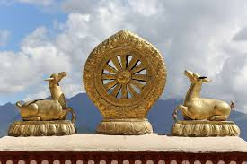
In Buddhism, the sun symbolizes Enlightenment and the profound awakening of the mind. The historical Buddha, Siddhartha Gautama, is often depicted with the "Dharma Wheel" (Dharmachakra), which closely resembles the sun with its radiating spokes, representing his teachings that illuminate the path for all beings. Just as the sun dispels the darkness of night, wisdom in Buddhism is viewed as a solar force that vanishes the darkness of ignorance.
In Buddhism, there are distinct indications of the Sun-god’s influence and the venerable position he held, as evidenced by temple and cave iconography. A prime example is the series of well-preserved images in the Kizil Caves of Central Asian (modern-day Xinjiang, China), where a Sun-god (paired with a Moon-god) is depicted alongside the Buddha. Furthermore, carvings of the Sun-god adorn the pillars and lintels of many ancient Buddhist temples in India, underscoring that the "Light of Truth" in Buddhism remained intrinsically linked to the cosmic symbolism of the Sun.
The notion of solar influence is further reinforced by Buddhist texts referring to the Buddha as "Aditya Bandhu" (Sanskrit for "Kinsman of the Sun"). While Buddhism as a religion does not propagate sun worship and its doctrines do not focus on solar deities, the sun's influence remains an undeniable building block of the Buddhist cosmos. Furthermore, with the emergence of the Mahayana tradition—which introduced the concept of a lineage of Buddhas and "Bodhisattvas" (beings of wisdom)—many of these enlightened figures were endowed with distinct Sun-like attributes, positioning Buddhist wisdom as a terrestrial reflection of cosmic radiance.
OCEANUS
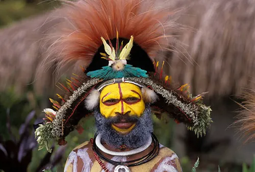
Papua New Guinea is home to hundreds of indigenous tribes. One of the most fascinating, and welcoming, are the Hulis, who don short skirts, traditional feather wigs and colourful face paint every day. In Papua New Guinea natives worship a Sun-God in the form of a giant stone altar, carved in the shape of a snake called ‘Uruan’.
CHINESE
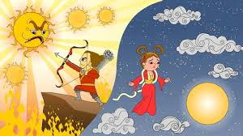
In Chinese mythology (cosmology), there were originally ten suns in the sky, who were all brothers. They were supposed to emerge one at a time as commanded by the Jade Emperor. They were all very young and loved to fool around. Once, they decided to all go into the sky to play at once. This made the world too hot for anything to grow. A hero named Hou Yi shot down nine of them with a bow and arrow to save the people of the earth. He is still honored to this very day as a symbol of heroic intervention.

The Sun and Immortal Birds Gold Ornament is a breathtaking artifact crafted by the Ancient Shu people. At its center lies a sun pattern with twelve points, surrounded by four Three-legged crows flying in a synchronized counterclockwise direction. This masterpiece, discovered at the Jinsha site, serves as a profound symbol of the Shu Kingdom’s advanced craftsmanship and their cosmological veneration of the solar cycle.
Japanese
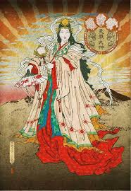
Amaterasu Ōmikami, the Sun Goddess of Japanese Shinto mythology, holds a paramount position in the ancient texts of Kojiki and Nihon Shoki. Beyond representing light and life, she is revered as the divine ancestress of Japan’s first legendary Emperor, Jimmu. This lineage establishes the Japanese Imperial Throne as a direct extension of divine radiance. By tracing their authority back to the solar deity, the Imperial family embodies the same "Solar Kingship" archetype witnessed in the civilizations of Egypt and Mesopotamia.
Amaterasu's retreat into the cave (causing cosmic darkness and the cessation of life) is compared to Demeter's retreat as a symbol of the "hidden sun" in winter. In alternative theories, both stories are seen as representations of the winter solstice, when daylight hours decrease and the sun "hides" below the horizon for a longer period, symbolizing the "death" of nature. Amaterasu's return (thanks to the dance of the goddess Ozumi, who enthralles her with joy and music) is likened to the return of Persephone, restoring "light" and fertility. Some scholars (such as those in astro-mythological societies) see this as evidence of a shared primordial myth from an ancient era, where peoples observed celestial cycles and embodied them in divine stories. For example, it is interpreted as a hypothetical "cosmic catastrophe" (such as an ancient climate change) that led to the "return of light" as a symbol of human survival.
It is said that sun worship in Japan was originally dedicated to a male deity, later shifting to a female one under the influence of priestesses or political forces. Scholars suggest that the original sun deity came from Korea during the Yayoi or Kofun period, accompanied by sacred solar relics such as mirrors. In the 6th or 7th century CE, the gender was changed to female due to the influence of imperial priestesses (saio) who served at the Ise Shrine. It is also believed that the Yamato dynasty adopted the concept of "children of the sun" from ancient Korean kingdoms (such as Koguryo, Silla, and Baekje), where kings were considered descendants of the sun, to unify Japan under a single imperial rule. This is seen as a political strategy to consolidate power, rather than an inherently Japanese tradition.
Upon examining her moniker, it is found to translate as the 'heaven-illuminating great deity' and 'shining in heaven.' These interpretations underline her role as the celestial sun goddess, who bathes the world in her divine radiance. The story of Amaterasu withdrawing into a cave in protest, casting the world into darkness, underscores her key role as the sun deity in Japanese mythology
Solar traditions endure in modern Japan through a custom known as Himachi (Sun-waiting). Participants in this ritual remain awake throughout the entire night of the fifth day of the tenth month. At the moment of sunrise, they offer worship and veneration to the ascending sun. Adherence to strict rules of religious purity is paramount, beginning the day before Himachi. This ritual preparation ensures that both body and spirit are attuned to receive the "Solar Frequency" in a state of absolute sanctity, reinforcing Japan's identity as the "Land of the Rising Sun."
Similarly, vast crowds assemble in Tokyo's open spaces to worship the Sun on the first day of the year—an event known as Hatsu-no-hinode (The First Sunrise). They perform the characteristic Japanese sun salutation by bowing their heads in deep reverence. Others undertake arduous pilgrimages to mountain peaks to greet the sun at the highest possible altitude. This collective act at the year's inception serves as a "frequential reset" for the nation, believing that witnessing the first light of the New Year bestows divine favor, vitality, and personal sovereignty.
The Ainos, the aboriginal people of Japan, have their own rites around the sun. During eclipses, the Ainos think the sun deity is fainting or dying. They throw water into the air to bring him back to life, just as they squirt water in the face of a person being ill
NORDIC
In Norse mythology, the sun was represented by the goddess Sol, who drove the chariot carrying the sun across the sky every day. The chariot was pulled by two horses named Arvak (Early Riser) and Alsvid (All-Swift). According to legend, Sol was relentlessly pursued by the wolf Skoll. It was believed that Skoll would eventually catch and consume her, triggering Ragnarok, the twilight of the gods and the end of the world. This myth encapsulates the primordial struggle between light and darkness and the inevitable cycle of cosmic dissolution and rebirth.
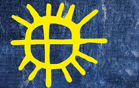
The Sami people of Norway, Finland, and Sweden recognize an important sun deity, Beaivi, who is associated with a complex sun symbol. In “The Shamanic Drum as Cognitive Map,” Juha Pentikäinen writes: “The Sami way of life, economy and culture is highly dependent on the sun. Seasonal variation is felt very strongly in the Arctic and Subarctic conditions of the Far North.” Like many people throughout time, the Sami recognize the sun as centrally important to life and give it corresponding religious significance.
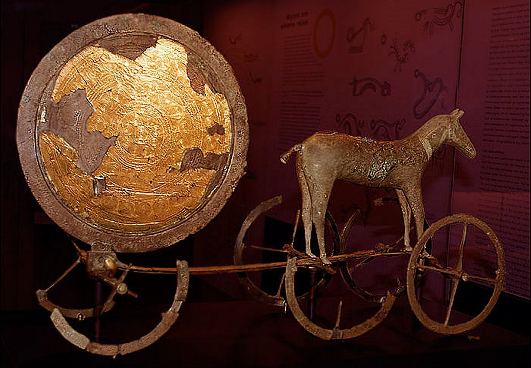
The Trundholm Sun Chariot (c. 1400 BCE), discovered in Denmark, stands as a paramount archaeological testament to Nordic Bronze Age sun worship. The chariot’s wheels are designed as Solar Crosses, a motif prevalent across the global archaeological record (from Sweden to Switzerland). The artifact depicts the Sun in a horse-drawn chariot, with one side intentionally gilded in gold (representing day or summer) and the other left dark (symbolizing night or winter). Archaeologist Klavs Randsborg proposes that the intricate spiral designs are not merely decorative but represent a sophisticated astronomical calendar of synodic months.
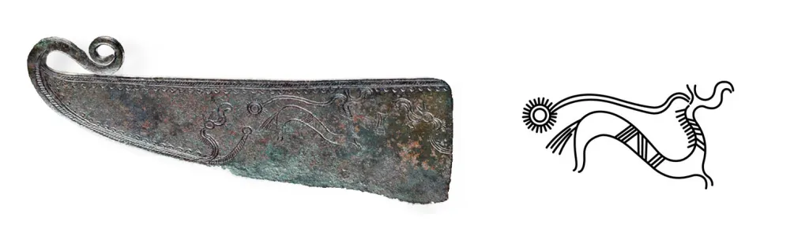
The Norse Bronze Age (1700–500 BCE) was heavily focused on sun worship. Key archaeological evidence includes a hieroglyphic-like depiction of a horse with a sun found on a bronze razor at Nieder Hvolris near Viborg, and a significant rock carving at Fossum (near Tanum). These findings, along with various other inscriptions and drawings, illustrate a culture deeply rooted in solar cosmology and the symbolic journey of the sun across the sky.
GREEC
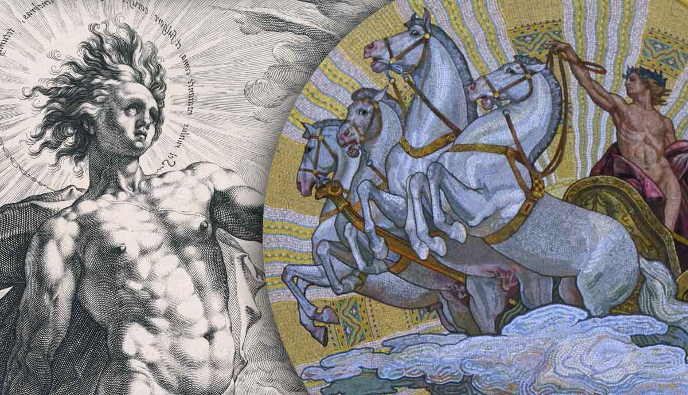
In ancient Greek mythology, the sun was personified as the god Helios, who rode a radiant chariot across the sky each day, bringing light to the world. The Greeks utilized the sun symbol extensively in their art and architecture, viewing it as a symbol of divine insight and cosmic power
The god Helios drives a majestic golden chariot pulled by four fire-breathing horses: Pyrois (The Fiery One), Eous (Of the Dawn), Aethon (Blazing), and Phlegon (Burning). This daily journey commences in the East (Ethiopia) and concludes in the West (the Gardens of the Hesperides), explaining the celestial phenomena of sunrise and sunset. At night, Helios embarks on a mysterious return voyage across the river Oceanus in a massive Golden Cup, ready to initiate the dawn of a new day in an eternal cycle of radiance and renewal.
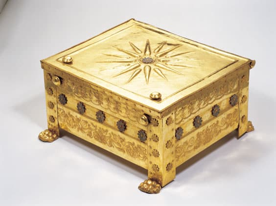
One of the best-known examples of the Vergina Sun comes in the form of its namesake artifact, a coffin contained within a tomb discovered in Vergina, Macedonia, Greece in 1977. The coffin, known as the Golden Larnax, featured a stunning sixteen-ray sunburst, and another coffin discovered in the same chamber had a twelve-ray sunburst. The tomb is thought to house the remains of King Philip II of Macedon and his wife.
The full significance of the Vergina Sun symbol remains a subject of debate. However, a predominant theory suggests that the rays extending from the central disc or rosette hold metaphorical weight within ancient Greek religion. A twelve-pointed star is believed to represent the twelve major gods of Olympus. A star with more rays, such as the sixteen-ray version, may signify a more intricate religious system incorporating various divine aspects. Despite these theories, the exact esoteric meanings of these sunburst symbols have been, for now, lost to time.
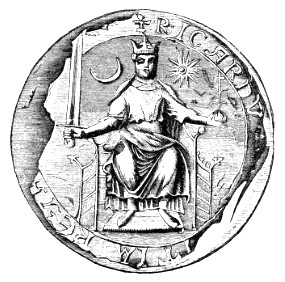
The full significance of the Vergina Sun symbol remains a subject of debate. However, a predominant theory suggests that the rays extending from the central disc or rosette hold metaphorical weight within ancient Greek religion. A twelve-pointed star is believed to represent the twelve major gods of Olympus. A star with more rays, such as the sixteen-ray version, may signify a more intricate religious system incorporating various divine aspects. Despite these theories, the exact esoteric meanings of these sunburst symbols have been, for now, lost to time
ROMAN EMPIRE
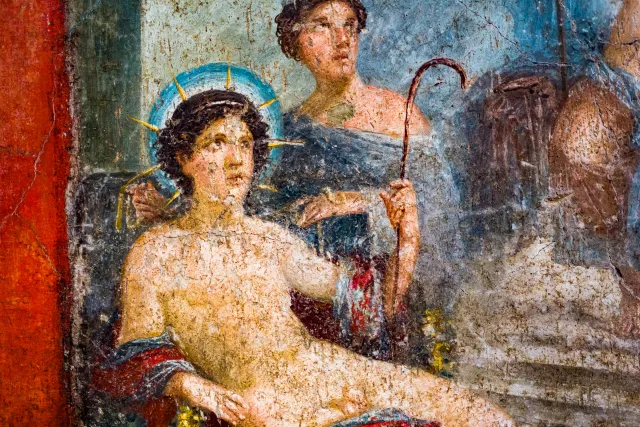
In early Rome (the Republican and early Imperial eras), there existed a more ancient solar deity known as Sol Indiges (the "Indigenous Sun" or "Original Sun"). His worship was deeply intertwined with agriculture and the rhythms of daily life, positioning him as the primary driver of earthly fertility and social stability. While his cult was more modest and less centralized than those of Jupiter or Mars, his sanctuary on the Quirinal Hill served as a spiritual anchor, connecting the city to the natural frequencies of the sun before Rome transitioned toward a more centralized Imperial solar theology.
Emperor Constantine continued to patronize solar worship even after his pivotal Christian vision in 312 CE. In a strategic move to harmonize faiths and unify the Empire under a single "frequency," he issued a historic decree in 321 CE establishing "Dies Solis" (the Day of the Sun)—known today as Sunday—as an official day of rest. Through this mandate, Constantine did not merely legalize Christianity; he immortalized the legacy of Sol Invictus (the Unconquered Sun) within the very fabric of the human calendar, ensuring that "Sunday" remains an eternal testament to the dominion of Light.
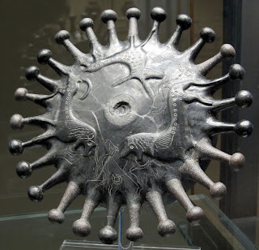
This artifact belongs to the "Bucchero" type of ceramics, produced in central Italy by the pre-Roman Etruscan population, who called themselves Raseni. Regarded as the "national" pottery of ancient Etruria, Bucchero ware is distinguished by its deep black fabric and glossy, black surface. This distinctive finish was achieved through a unique "reduction" firing method, where oxygen was starved from the kiln to transform the clay's color.
Glory comes from the Latin word “gloria” which is identified with the Sun as being radiant, shining, brilliant, bright as the sun. “Gloria” was a Roman goddess that was half-naked and held the zodiac signs
Halo comes from the Greek/Roman Sun-god “Helios.” Romans applied the word “gloria” to be a sunburst or ring of light around the head of “Helios.” The use of halos around the heads of angels, the Madonna and Son, and Catholic saints has been extremely popular in paintings, artwork, and statuary connected to the Roman Catholic religion for centuries. The Roman Catholic Church still uses the “gloria” sunburst in the Eucharist.
CELTIC
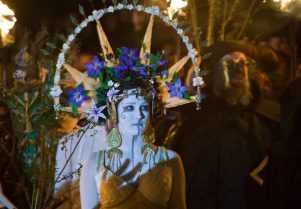
The Celts were among the ancient cultures that profoundly recognized the vital importance of the Sun. They revered numerous deities with solar attributes and held celebrations marking the pivotal stages of the solar cycle. During the Beltane Festival (Beltane meaning "bright fire," referring to the Sun), the return of summer is still celebrated today with great bonfires—sometimes using sweet-smelling Juniper—to achieve purification and rejuvenation. This festival is closely linked with Belenus, known as the "Fair Shining One" or "The Shining God," one of the most ancient and widely worshiped Celtic deities. Associated with the horse, he rides across the sky in a wild, horse-drawn chariot, a defining characteristic of a solar deity. Notably, he was also the patron deity of the Italian city of Aquileia.
Another well-known sun god of the Celts is Lugh, whose name means “shining one” or “flashing light”. His name is the origin of the Pagan festival “Lughnasadh” (which is also the Irish Gaelic name for the month of August). He was the patron god of Lugdunum (currently Lyon, France) and was associated with multiple skills and industries including arts and crafts, commerce, history, healing, war and blacksmiths. Among his symbols were ravens and specifically a white stag in Wales. He is represented as a king, a leader of the army but also a powerful god who brings light into the world.
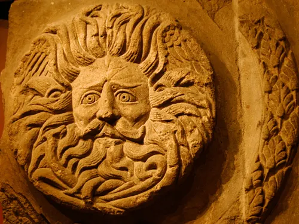
The Sun has also been profoundly represented through feminine archetypes. In Irish Gaelic, the word for the sun is Grian. Although direct myths about her have faded over time, her presence endures in sacred topography, such as Lough Graney and Tuamgraney. Grian embodies the Winter Sun, while her sister—or perhaps her dual aspect—Áine, represents the Summer Sun. Áine is the goddess of wealth, prosperity, and sovereignty over crops and animals; she is often symbolized by a Red Horse, linking her to the ancient solar lineage of celestial steeds that carry light across the firmament.
Étaín is another Celtic goddess considered to be associated with the Sun. She was originally a Sun goddess before becoming a moon goddess. She is the heroine of well known story in Celtic mythology, Tochmarc Étaíne (The Wooing of Étaín). Through being faithful to love and to her true self, she was reborn and became immortal again. Elements sacred to Étaín are the sun, dawn, the sea, rain, water, butterflies, apple blossoms, and swans. She is the goddess of healing, rebirth and the transmigration of souls.
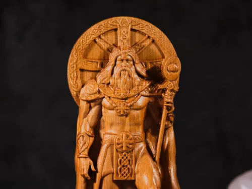
Many researchers and historians draw a direct linguistic and mythological connection between the Celtic god Belenus and the Middle Eastern solar and sovereign deity Baal. They argue that the Celts inherited their solar worship from migratory peoples originating in the Middle East or even from the lost continent of Atlantis. This hypothesis suggests a "Universal Solar Religion" that transcended borders; both deities share attributes of light, fertility, and absolute sovereignty, with rituals centered around sacred bonfires—such as the Celtic "Beltane" and the ritual fires of Baal’s temples.
There are widespread claims that ancient sites such as Stonehenge in England and Newgrange in Ireland—which align with breathtaking precision to the solstices—were Celtic solar temples. However, archaeological evidence confirms that these structures predate the Celts by thousands of years. This suggests that the prehistoric peoples who built these megaliths possessed advanced astronomical and frequential knowledge. The Celts (and later the Romans and the Church) merely "re-occupied" these energetic hubs, adapting them for their own solar rituals. This reinforces the continuity of the "Solar Protocol" across millennia, regardless of shifting civilizations.
CHRISTIANITY
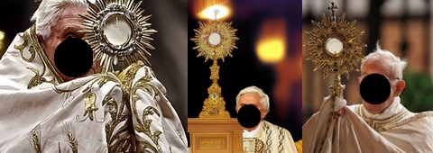
In Christianity, the sun is sometimes used symbolically to represent Jesus Christ as the “Sun of Righteousness.” This imagery reflects divine truth and guidance that dispels the darkness of sin. Furthermore, the Halo, frequently depicted around the heads of saints in sacred art, serves as a solar symbol, representing the divine light reflected through them and the radiating holiness of their souls.
The text in Deuteronomy 4:19 serves as a direct and stern warning against falling into the worship of the Sun, the Moon, and the Stars (all the host of heaven). It states: "And when you look up to the sky and see the sun, the moon and the stars—all the heavenly array—do not be enticed into bowing down to them and worshiping things the Lord your God has apportioned to all the nations under heaven." This mandate establishes a definitive boundary between the "Creator" and the "Created," asserting that these celestial bodies, despite their awe-inspiring majesty that might tempt humanity toward adoration, are merely instruments or elements ordained by the Creator for the benefit of all nations, rather than being the ultimate source of divinity themselves.
The account in 2 Kings (23:5, 11) documents one of the most intense theological confrontations in history, where King Josiah launched a comprehensive campaign to eradicate the remnants of celestial worship. Josiah deposed the priests who burned incense to "Baal, the sun and moon, the constellations, and all the starry hosts." Crucially, he "removed from the entrance to the temple of the Lord the horses" that the previous kings of Judah had dedicated to the sun, and he burned the chariots of the sun with fire. This text confirms that solar symbolism—specifically the horse and chariot—had permeated the supreme religious center, necessitating a royal intervention to sever ties with this "Global Solar Protocol."
“I will destroy your high places, cut down your pillars for sun-worship, and throw your carcasses on the carcasses of your idols; and I will detest you” (Leviticus 26:30; emphasis added).
“Your altars shall be made desolate and your sun-pillars shall be broken in pieces, and I will cast down your slain before your idols” (Ezekiel 6:4; emphasis added).
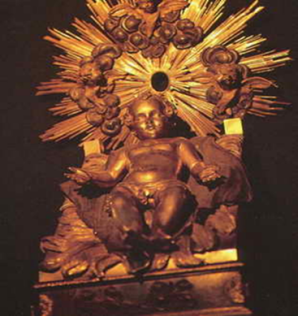
The "Golden Child" in the Vatican treasury, like so many other depictions of the infant in Roman Catholic iconography, is strikingly reminiscent of the ancient worship of Tammuz as a child. Born on December 25, the infant Tammuz represented the rebirth of the sun. From this perspective, the celebration of Christmas is seen as a continuation of a profound solar tradition that commemorates the birth of the "New Sun" or the "Golden Child" during the Winter Solstice—the point where light begins to reclaim the year from the darkness.
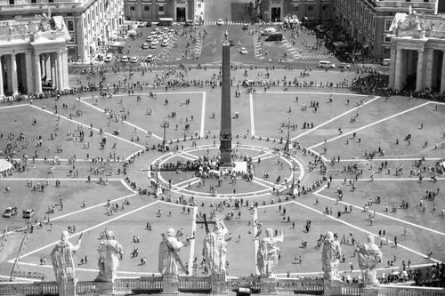
Critical analysis challenges the credibility of the notion that the "Prince of Peace" (Jesus) bestowed upon Constantine a symbol representing "Christ" as an emblem for victory in a bloody slaughter. Overwhelming evidence suggests that Constantine did not truly convert to Christianity but remained a pagan sun worshipper throughout his reign, skillfully merging Jesus with solar deities like Apollo and Sol. In the same vein, he manipulated a pagan sun symbol—the Chi-Rho—to imbue it with Christian significance. The fact that the Chi-Rho is embedded in the layout of St. Peter’s Plaza serves as compelling evidence of its solar origins, integrating Constantine’s solar emblem with other ancient pagan sun symbols in a unified sacred geometry.
The relocation of the last remaining upright obelisk in Rome—an extraordinary engineering feat—stood as a testament to Renaissance ingenuity and a monument to human achievement. The gilt ball atop it was believed to house the ashes of Julius Caesar, the first Roman emperor deified as a god. However, the obelisk’s symbolism aligns perfectly with the occult purpose of St. Peter’s Plaza: Sun Worship. Originally from Heliopolis (Sun City) in Egypt, the obelisk represents a solidified shaft of sunlight. The Jesuit scholar Athanasius Kircher described it as the Digitus Solis, or "the finger of the sun." Placing this pagan symbol in the Vatican’s center ignored the biblical mandate against following Egyptian practices, serving instead as a Counter-Reformation display of Roman power—erecting monuments to the sun god to overshadow the biblical plan of redemption.
Looking up into the dome of St. Peter’s, one cannot miss the conspicuous 16-ray sun wheel. In a masterstroke of architectural lighting, natural sunlight streams into the central hub of the dome, creating a genuine, sun-lit sunburst at the very heart of the wheel. Historically, these symbols are direct derivatives of Sun Worship. This prevalence of solar iconography within the Roman Catholic Church—despite scriptural condemnations—suggests a profound "contamination" by the pagan influences of Emperor Constantine. As a devoted sun worshipper, Constantine effectively synthesized pagan solar motifs with ecclesiastical structures to consolidate his imperial authority.
On the underside of the canopy of Bernini’s Baldacchino—the colossal, canopy-like monument in St. Peter’s Basilica—there is a prominent Sunburst image. This monument stands directly over the main altar and the alleged tomb of St. Peter. This symbol functions as a "focal point of light," streaming from the heavens to rest upon the most sacred spot in the cathedral. It reinforces the concept of a "frequency channel" connecting the divine realm with the terrestrial plane through potent solar iconography.
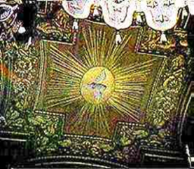
“And he brought me into the inner court of the LORD’S house, and, behold, at the door of the temple of the LORD, between the porch and the altar, were about five and twenty men, with their backs toward the temple of the LORD, and their faces toward the east; and they worshipped the sun toward the east. Then he said unto me, Hast thou seen this, O son of man? Is it a light thing to the house of Judah that they commit the abominations which they commit here?” (Ezekiel 8:16 -17).
One of the most visible pieces of evidence that sun worship has continued under the name of Christianity is on the front of the Pope’s mitre, the symbol is a sun disc of “Shamash” (sun worship).
A Maltese cross can be observed near the Pope’s collar, representing yet another ancient pagan sun symbol. For confirmation of its solar origins, one only needs to look closely at the necklace on the chest of the Neo-Assyrian stele depicting King Shamshi-Adad V (dating from about 824-811 B.C.). The King is wearing what is referred to as a Cross Pattée, Cross Formée, or Maltese cross. Twenty-eight hundred years ago, this shape was fundamentally symbolic of pagan sun worship and the cosmic sovereignty derived from light, proving the enduring legacy of solar iconography across millennia and civilizations.
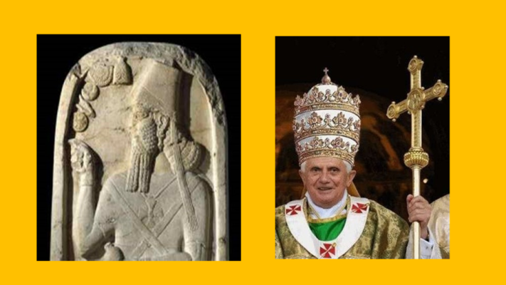
The Pope wears a similar symbol around his neck on the ecclesiastical vestment known as the Pallium, which is also donned by archbishops, patriarchs, and bishops as a symbol of their conferred jurisdictional authorities. From a historical and frequential perspective, the presence of these solar crosses on the Pallium represents a continuation of the "Authority Delegation Protocol" derived from Light. The vestment acts as a "frequential collar," linking the wearer to the lineage of sovereignty that began with the ancient Sun-Kings and extends to the pinnacle of the modern ecclesiastical hierarchy.
ARAB
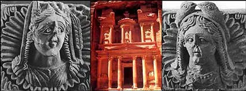
Turning our attention to the Nabateans, the ancient Arab civilization that created the rose-red city of Petra and settled in modern-day Jordan, we encounter the sun god Dushara. Dushara symbolized supreme divine power and served as the chief deity of the Nabateans. This led to the construction of temples and monuments dedicated to him throughout the flourishing Nabatean Empire between the 4th century BCE and 106 CE. This deep connection to Dushara reflects their unwavering respect for the sun's life-giving energy, manifested in their sophisticated architectural alignments with solar cycles.
The civilization of Sheba (Saba), located in Southern Arabia (modern-day Yemen), flourished through the trade of frankincense and spices. Under Queen Bilqis (the Queen of Sheba), worship was primarily astral, with a supreme focus on the Sun as a central deity. While traditional views labeled their chief god Almaqah as a lunar deity, modern archaeological evidence—linked to solar symbols like the bull’s head and the vine—points to his solar nature. Almaqah formed a powerful cosmic triad with the goddess "Shams" and "Athtar." The Awwam Temple in Marib served as the frequential epicenter for this cult, where monarchs claimed to be the "descendants of the Sun." The narrative of Prophet Solomon marks a definitive historical shift, as he summoned the Queen to abandon "prostrating to the Sun" in favor of monotheism, signaling the eclipse of solar sovereignty by divine unity.
ISLAMIC
In the Qur’an, the Sun—like other celestial objects—is not endowed with any particular divine status or mystical symbolism. Due to the widespread presence of Sun-worshiping cults in Pre-Islamic Arabia, Islamic doctrine (Shariah) forbade prayers during the exact moments of the Sun’s rising and setting to symbolically refute its divinity.
Pre-Islamic Arabs viewed solar eclipses and celestial occurrences as omens signaling the passing of important figures. However, this belief was explicitly refuted by the Prophet Muhammad in 632 C.E. when the death of his son coincided with a solar eclipse. He stated:
The Ed-Dur archaeological site in Umm Al Quwain (UAE) stands as a paramount witness to sun worship during the 1st century BCE. Excavations have revealed a unique Sun Temple featuring altars for sacred fires, Aramaic inscriptions, and statues of symbolic eagles—regarded as messengers of the Sun and emblems of its ascending power. Historical records further attest to the prevalence of theophoric names such as "Abd Shams" (Servant of the Sun), a common name among ancient Arabian tribes, most notably Abd Shams ibn Abd Manaf (an ancestor of the Quraysh tribe). This confirms that solar consciousness was a foundational pillar of identity and social theology in pre-Islamic Arabia.
The verse from Surah Fussilat (41:37) establishes the ultimate principle in dealing with cosmic consciousness: "Among His signs are the night and the day, and the sun and the moon. Do not prostrate to the sun or to the moon, but prostrate to Allah who created them, if you truly worship Him." This divine mandate positions the Sun and the Moon correctly as "Signs" (indicators/tools) of the Creator’s majesty, rather than deities in their own right. It is a direct command to redirect the energy of devotion from the "Created" (the celestial bodies) to the "Creator" who engineered this magnificent electrical and physical system.
“The Sun and the Moon are from among the evidences of God. They do not eclipse because of someone’s death or life.”
The Quranic text in Surah An-Naml (27:24) documents a profound historical and geopolitical reality through the report of the Hoopoe to Prophet Solomon: "I found her and her people prostrating to the sun instead of Allah. Satan has made their deeds seem alluring to them and kept them from the right path, so they are not guided." The verse portrays the Kingdom of Sheba (modern-day Yemen) as a stronghold of Sun Worship, where the solar deity was revered as the ultimate source of sovereignty and abundance. The text analyzes this behavior as an "allurement" that caused a diversion from pure Monotheism, reflecting the clash between the "Materialistic Solar Civilization" and the "Spiritual Monotheistic Civilization" represented by Solomon.
The verse in Surah Al-An'am (6:78) represents the pinnacle of logical and spiritual argumentation presented by Prophet Abraham. In an environment saturated with the global "Solar Religion," Abraham utilized celestial observation to deconstruct pagan belief: "When he saw the sun rising in splendor, he said: 'This is my lord; this is greatest.' But when the sun set, he said: 'O my people! I am indeed free from your guilt of ascribing partners to Allah.'" Abraham recognized that the Sun, despite being the "greatest" in the visible system, is subject to the "Law of Setting" (motion and disappearance). This setting is the physical evidence that it is a "mechanism" governed by laws, rather than a "Creator" who ordains them.
In the Islamic narrative, as detailed in Surah Al-Naml, the hoopoe revealed to Prophet Solomon that Queen Bilqis and her people were "prostrating to the Sun instead of Allah," describing how Satan had "made their deeds fair-seeming to them and averted them from the [right] way." Renowned exegetes like Ibn Kathir and Ibn Abbas emphasize that this act represented the pinnacle of polytheism—substituting the Creator with the created. Despite Sheba’s immense material and civilizational prosperity, the Quranic focus remains on Bilqis’s "monotheistic transformation." Upon witnessing Solomon’s miracles (such as the palace of crystal), she recognized the limitations of material forces and solar frequencies compared to Divine Power, declaring: "I submit with Solomon to Allah, Lord of the worlds." This transition serves as a definitive message: the Sun, regardless of its role as a "motor of life," remains a subjugated creation unworthy of worship.
20. And he inspected the birds and said, "Why do I not see the hoopoe, or is he among the absent?" 21. "I will surely punish him with a severe punishment or slaughter him unless he brings me a clear authorization." 22. But the hoopoe stayed not long and said, "I have encompassed [with knowledge] that which you have not encompassed, and I have come to you from Sheba with certain news." 23. "Indeed, I found [there] a woman ruling them, and she has been given of all things, and she has a great throne." 24. "I found her and her people prostrating to the sun instead of Allah, and Satan has made their deeds fair-seeming to them and averted them from [His] way, so they are not guided," 25. "[And they should have known] so they do not prostrate to Allah, who brings forth what is hidden within the heavens and the earth and knows what you conceal and what you declare -" 26. "Allah - there is no deity except Him, Lord of the Great Throne." 27. [Solomon] said, "We will see whether you were truthful or were of the liars." 28. "Go with this letter of mine and deliver it to them. Then leave them and see what [answer] they will return."
AFRICA
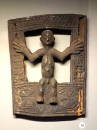
In the culture of the Bakongo people, Nzambi Mpungu is revered as the Sky Father and the god of the Sun, while his female counterpart, Nzambici, is the Sky Mother and the deity of the Moon and the Earth. The Sun holds profound significance for the Bakongo, who believe that its celestial position marks the various seasons of a person's life as they transition through the "Four Moments of the Sun": conception (musoni), birth (kala), maturity (tukula), and death (luvemba). The Kongo Cosmogram, a sacred symbol in Bakongo culture, depicts these solar movements, representing the soul’s continuous journey between the physical and spiritual realms.
The sun—with its commanding presence in the sky, its blinding brightness, and its essential warmth for life—serves as a potent symbol for the divine. While direct depictions of the sun are rare in traditional African arts, the conceptual frameworks surrounding it underscore its pervasive influence. In various traditions across the continent and throughout the African diaspora, the rising and setting of the sun and its daily celestial arc represent the "Cycle of Life": a journey from birth to adulthood, death, and ultimately, rebirth.
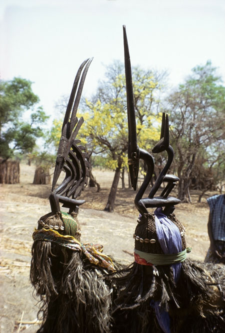
In the culture of the Bamana people, the elaborate crests known as Chi Wara (or Ci-wara) honor the mythic being who taught humanity the art of farming. The male crest, primarily representing the Roan Antelope, serves as an emblem of the Sun. Its intricate, openwork mane is a symbolic recall of the daily path of the sun as it arcs across the sky. The design also suggests the antelope's zigzag flight when pursued. In this ritualistic duality, the male represents the Sun, while the female (the Oryx) symbolizes the Earth; their union in dance invokes the fertility and abundance of the land.
A significant connection can be established between the sun and the golden disk-shaped ornaments called akrafokonmu, worn by esteemed members of the Akan royal courts in Ghana and Ivory Coast. The intricate design of these pendants suggests the radiating rays of the sun, although they are locally identified in Ghana as symbols of stars or the crocodile. Often referred to as "Soul Disks" or "Soul Washers' Badges," these ornaments signify court officials responsible for maintaining the spiritual well-being of the King and, by extension, the nation. Each pendant bears designs that reinforce the divine royal context in which it is displayed.
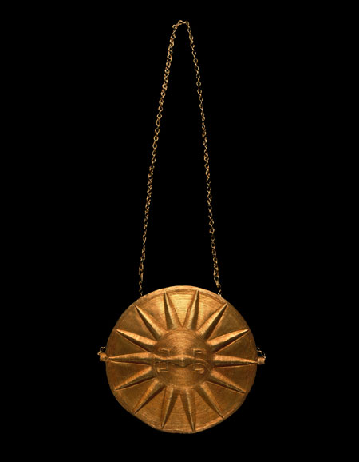
A significant connection can be established between the sun and the golden disk-shaped ornaments called akrafokonmu, worn by esteemed members of the Akan royal courts in Ghana and Ivory Coast. The intricate design of these pendants suggests the radiating rays of the sun, although they are locally identified in Ghana as symbols of stars or the crocodile. Often referred to as "Soul Disks" or "Soul Washers' Badges," these ornaments signify court officials responsible for maintaining the spiritual well-being of the King and, by extension, the nation. Each pendant bears designs that reinforce the divine royal context in which it is displayed.
The Sara (Kameeni) people are an amalgamation of ancient Sun-worshipping, fishery, and sedentary agriculturalist groups of Nilo-Saharan origins, residing in southern Chad and the Central African Republic. For centuries, most Sara have been situated between Lake Iro in the east and the Logone River in the west. Their cultural identity is deeply rooted in a spiritual heritage that harmonizes the abundance of the waters and the earth with the sovereign light of the Sun.
Theories
The traditions of numerous indigenous peoples worldwide record how a group of priests and sages, who survived a great flood, arrived to teach them the arts of civilization and the Religion of the Sun. I refer to these figures as the "Wisdom Bringers." Key examples include Viracocha of the Inca, Quetzalcoatl of the Aztecs, Masaaw of the Hopi, Manu of India, and Osiris of Egypt. While they eventually became worshiped as gods, ancient legends explicitly state that they were real people who possessed advanced knowledge and sought to rebuild the world in the aftermath of the cataclysm.
According to this perspective, the choice of the sun was a calculated strategy. It is argued that the deceptive forces do not call humanity to worship a weak stone or an insignificant entity, but rather select the most powerful element within human perception—the one with the most profound impact on daily life. The Sun serves as the perfect candidate: it provides life, it possesses the power to consume, and it is impossible to ignore. Therefore, it is viewed as the "shrewdest possible substitute" for the worship of God, precisely because it "convinces" the sensory mind, which tends to sanctify what it can see, feel, and experience as a direct physical force.
In her provocative works, such as The Christ Conspiracy, author Acharya S (D.M. Murdock) argues that the Babylonian sun god Shamash (Utu), revered in Sippar and Larsa, serves as the ancestral archetype for various symbols in later faiths. She posits that during the Babylonian Exile, Jewish culture absorbed these solar elements, leading to "Shemesh" becoming a concealed motif within the Hebrew Bible. Furthermore, she links the "Shamash"—the helper candle in the Hanukkah menorah or a synagogue sexton—directly back to the ancient deity. Her synthesis extends to Christianity, where she views traditions like Christmas being celebrated near the Winter Solstice as a continuation of solar worship cloaked in new theology.
On December 25th, the sun begins its noticeable ascent, moving one degree northward and ending its winter standstill. For the people of the Northern Hemisphere, this movement signaled the return of warmth and the receding of darkness—an event the ancients perceived as the "Rebirth of the Sun." Consequently, this perspective suggests that the birth of Jesus (the "Sun of God" / "Light of the World") on December 25th is intrinsically linked to this celestial phenomenon. Just as the sun brings "salvation" to the frozen earth, the Christ figure represents spiritual salvation. The original essence of Christmas, therefore, lies in ancient celebrations marking the triumph of light and the sun's return from its temporary "death."
Author Acharya S and the documentary Zeitgeist propose that December 25th is literally the "Birth of the Sun." During the Winter Solstice (Dec 21–23), the sun appears to stop its southward movement for three days before "beginning its ascent one degree north" on December 25th—symbolizing the "Rebirth of the New Sun." They link Jesus to the "Sun of God" (leveraging the Sun/Son wordplay) and cite Malachi 4:2, which mentions the "Sun of Righteousness." The theory posits that under Constantine, Christianity replaced ancient solar deities (such as Mithra, Horus, and Shamash) with Jesus to achieve political control, effectively rebranding the ancients' "salvation" from darkness into a new state religion.
The critical school of religious and historical studies proposes the "Universal Savior" as a recurring astronomical archetype across civilizations. Striking parallels exist between deities such as Horus, Mithra, Buddha, Krishna, and Hermes. These figures share specific symbolic traits: birth from a virgin, having 12 disciples (representing the zodiac), performing miracles like walking on water or healing, and dying for three days (symbolizing the solar standstill during the Winter Solstice) before rising again. This framework links their birth on December 25th to the sun's observed northward ascent. Scholars suggest that Christianity, particularly during the Constantinian era, assimilated these ancient mythological molds to secure political dominance and cultural integration. Meanwhile, alternative theories, such as the "Ancient Astronaut" hypothesis, suggest this celestial knowledge was imparted by extraterrestrial visitors.
Scholars of alternative history, such as Graham Hancock and Erich von Däniken, view these traditions as remnants of a lost ancient astronomical knowledge. They argue that Mesopotamian civilizations (evident in the worship of Shamash) understood the solar cycle as a cosmic symbol of rebirth. In this framework, Christmas is seen as a modern "vestige" of global Winter Solstice festivals that predated Christianity by millennia—such as the Germanic Yule or the Roman Saturnalia. All these celebrations shared a common core: honoring the precise moment light triumphs over darkness.
Certain modern narratives and theories suggest that secret societies, such as Freemasonry or the Illuminati, embed ancient Egyptian symbols—most notably the Eye of Ra and the Pyramid—within their designs and emblems. Proponents of these theories interpret the presence of such icons as evidence of a "clandestine worship" of a solar deity, often linked to demonic forces or the figure of "Lucifer" (the Light-Bringer). In this context, the pyramid and the all-seeing eye are viewed not merely as architectural or enlightenment motifs, but as encoded signals of an ancient allegiance that sanctifies a "luminous created entity" as a substitute for the Divine Creator.
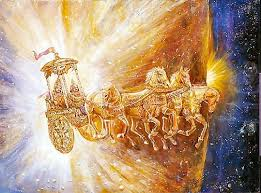
In antiquity, long before the heliocentric discoveries of Copernicus and Galileo, the sun was perceived from a geocentric perspective as a majestic body "moving" across the celestial vault. To explain this regular and organized daily journey, ancient humanity utilized the most powerful means of rapid transport known to them: the Chariot. Thus, the "Solar Chariot" became a symbol of cosmic order, speed, and divine authority. The mechanical motion of the chariot on earth served as a terrestrial metaphor for the eternal journey of the sun above, traveling from east to west to sustain the cycle of life.
The Pine Cone Staff housed in the Egyptian Museum in Turin, Italy, is a profound symbol of the solar god Tammuz and has deep Egyptian origins, where his mother, Isis, was revered as the Virgin Mother. On the "Tree of Life," the pine cone represents the slow ripening of the conifer’s female seeds. In its later stages, the cone opens to release its mature seeds. This natural process symbolizes the "Seeding Effect" on diverse peoples and cultures, coupled with the expansion of human consciousness and the dissemination of solar wisdom throughout history.
The concept of "Expanded Consciousness" originates from engravings depicting two intertwined serpents rising to meet at a pine cone. Modern scholars and philosophers have noted the striking symbolic parallels between this staff and the Indian "Kundalini"—a spiritual energy depicted as coiled serpents rising from the base of the spine to the Third Eye (Pineal Gland) at the moment of enlightenment. Awakened Kundalini signifies the merging and alignment of the Chakras and is said to be the sole path to attaining "Divine Wisdom," bringing forth pure joy, pure knowledge, and pure love.
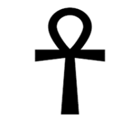
The Assyrian relief depicts a winged deity holding a pine cone, representing the "power of regeneration" associated with the Babylonian god Tammuz. Symbolic research suggests that the practice of the "Sign of the Cross" finds its origins in ancient Babylon, where people paid homage to their "messiah," Tammuz, who was said to have "died for the good of his people." Their devotion was expressed by making the sign of the "T" (the initial of his name). This practice of using T-shaped wooden structures was later adopted by the Romans as a method of execution. Furthermore, the Egyptian Ankh is considered a synthesis of the Tammuz "T" and the solar disc, confirming the unified symbolic origin of sun and sovereignty throughout history.
The title "Lord" originates from the Old English spelling of "Lard," which stems from "Lar/Larth/Lares"—Etruscan and Roman deities anciently associated with Sun-worship. Similarly, the Greek word "Kurios" was originally a title specifically reserved for the Greek and Roman Sun-deity "Helios," who was addressed as "The Kurios (Lord) of Heaven and Earth." The Hindu deity "Krishna" is also widely referred to as "Lord." Eventually, this title was applied to all heathen deities. Despite these roots, most Bible translators continue to use "Lord" as a substitute for the divine name (YHVH/Yahweh).
The name "Jesus" originates from the Greek name "Iesous/IHSOUS" and the Latin "Iesus." The form "Iesous" is adapted from the name of the Greek goddess of healing, "Iesos/Iaso," the daughter of Apollo, the Sun-deity. This goddess was linked to the Egyptian "Isis," who had a son named "Isu." During the Roman Imperial era, many followers of Isis converted to Constantine’s synthesized religion, which eventually formed the Roman Catholic Church. The Church continues to employ the sunburst emblem known as the "Eucharist," which to this day bears the Greek letters "IHS" for "IHSOUS." Further research suggests the name "Jesus" is also phonetically and conceptually linked to the Greek Sun-god "Zeus," the Greek interpretation of the Egyptian Sun-god "Amen-Rah."
Christmas – 25th of December was the largest pagan festival dedicated to the birthday of the Sun-god deity celebrated by the Mithras (Roman) religion known as “The Nativity of the Sun.” Mithraism was the major rival of the Messianic faith in 321 AD
Holy, Holiday, Holy Spirit are all interrelated and come from the Hindu religion. The words are derived from “Holi” which is the great Hindu spring festival held in honor of “Krishna,” the Hindu Sun-god
Bible comes from the Greek word “Biblos/Biblion” which refers to the Egyptian papyrus reed which the Greeks called “Byblos/Byblus.” The papyrus reed was shipped from the Egyptian City “Biblis” named after its female Sun-deity. It was imported through the Greek seaport called “Byblos” named after its Phoenician Sun-deity “Byblis/Byblos” believed to be the granddaughter of Apollo, the Greek Sun-diety.
Divine/Divinity, Deity, Theos are all related words. The Greek words “dios” and “Theos,” and the Latin word “deus” all refer to pagan gods: Greek “Dieus/Zeus, Teutonic-Germanic “Ziu,” Roman “Diovis/Jovis/ Jupiter/Zeus were all names for Sun-god deities that “shine, have brightness.”
Obelisks, spires, steeples, and church towers all originate from the pagan worship practices of Babylon and Egypt known as "Sun-pillars." These structures are crafted in various tall, aspiring shapes appearing to reach toward the heavens. Ancient Babylon constructed Sun-pillars incorporating specific symbolism into their worship, while Egypt built obelisks as a central component of solar veneration. Although Exodus 23:24 states that YHVH commanded the Israelites to break down these pillars, a prominent Egyptian obelisk still stands at the entrance of St. Peter’s Basilica in Rome. It was erected as a memorial to the fusion of Sun-worship and the Messianic faith into a "universal" religion. Modern church steeples, towers, and the Washington Monument are contemporary replicas of these original obelisks, standing as enduring symbols of solar sovereignty.
Research
In his landmark studies of Stonehenge, astronomer Gerald Hawkins revolutionized our understanding of ancient megaliths, asserting that they were far more than mere stones. He claimed the site was a sophisticated solar temple, precisely aligned with the sunrise during the summer solstice. Hawkins envisioned these structures as holding "hymns to the god who appears at dawn," viewing them as definitive evidence of an advanced ancient solar cult in Britain. For Hawkins, Stonehenge functioned as a "stone computer," designed to track the solar and lunar cycles, ensuring the Earth remained in harmony with the celestial pulse.
In his seminal work, "Morals and Dogma," Albert Pike envisioned the Sun as a universal symbol of the beneficent principle and perpetual regeneration. Pike posited that the Sun is the "natural fire of bodies" and identified it as the core essence behind diverse divine entities throughout history: it is Brahma to the Hindus, Mithras to the Persians, Amun and Osiris to the Egyptians, and Baal to the Chaldeans. For Pike, these deities are manifestations of the Sun as the supreme source of fertility and life. He incorporated this solar symbolism into Masonry as a philosophical emblem representing intellectual light and cosmic sovereignty.
Imam Al-Tabari, the paramount exegete and historian, links Sun-worship directly to the narrative of Abraham’s people in Babylon and its environs. Al-Tabari posits that this worship was not merely a cultural ritual but an "innate deviation" (Inhiraf Fitri) from primordial monotheism. In his commentary on the verses of disputation, he illustrates how Abraham employed the Sun, Moon, and stars as intellectual instruments to demonstrate their inadequacy as deities—being "setting" (vanishing) entities that are created and governed. For Al-Tabari, the exaltation of the Sun among ancient nations resulted from a clouded perception that substituted the "Creator" for the "created," warning that being dazzled by the power of material light led humanity into "Cosmic Shirk."
In his influential work, "The Two Babylons," Alexander Hislop controversially asserted that the Roman Catholic Church practices a veiled form of Sun-worship, inherited directly from the Babylonian solar religion of Nimrod and Tammuz. Hislop argued that celebrating Christmas on December 25th is merely a continuation of the pagan festival of the Unconquered Sun (Sol Invictus). He further claimed that many Christian symbols are derived from ancient solar paganism, rebranded under new nomenclature to maintain cosmic and religious hegemony over the masses.